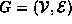
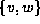
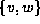

Data Structures and Algorithms
with Object-Oriented Design Patterns in Java
Data Structures and Algorithms
with Object-Oriented Design Patterns in JavaLike Prim's algorithm, Kruskal's algorithm also constructs the minimum spanning tree of a graph by adding edges to the spanning tree one-by-one. At all points during its execution the set of edges selected by Prim's algorithm forms exactly one tree. On the other hand, the set of edges selected by Kruskal's algorithm forms a forest of trees.
Kruskal's algorithm is conceptually quite simple. The edges are selected and added to the spanning tree in increasing order of their weights. An edge is added to the tree only if it does not create a cycle.
The beauty of Kruskal's algorithm
is the way that potential cycles are detected.
Consider an undirected graph .
We can view the set of vertices,  ,
as a universal set
and the set of edges,
,
as a universal set
and the set of edges,  ,
as the definition of an equivalence relation
over the universe
,
as the definition of an equivalence relation
over the universe  .
(See Definition
.
(See Definition  ).
In general, an equivalence relation partitions
a universal set into a set of equivalence classes.
If the graph is connected,
there is only one equivalence class--all the elements of the universal set are equivalent.
Therefore, a spanning tree is a minimal set of equivalences
that result in a single equivalence class.
).
In general, an equivalence relation partitions
a universal set into a set of equivalence classes.
If the graph is connected,
there is only one equivalence class--all the elements of the universal set are equivalent.
Therefore, a spanning tree is a minimal set of equivalences
that result in a single equivalence class.
Kruskal's algorithm computes,
,
a sequence of partitions
of the set of vertices  .
(Partitions are discussed in Section ).
The initial partition consists of
.
(Partitions are discussed in Section ).
The initial partition consists of  sets of size one:
sets of size one:
Each subsequent element of the sequence is obtained from its predecessor by joining two of the elements of the partition. Therefore, has the form
for  .
.
To construct the sequence
the edges in  are considered one-by-one
in increasing order of their weights.
Suppose we have computed the sequence up to
and the next edge to be considered is .
If v and w are both members of the same element of partition ,
then the edge forms a cycle,
and is not part of the minimum-cost spanning tree.
are considered one-by-one
in increasing order of their weights.
Suppose we have computed the sequence up to
and the next edge to be considered is .
If v and w are both members of the same element of partition ,
then the edge forms a cycle,
and is not part of the minimum-cost spanning tree.
On the other hand, suppose v and w are members of two different elements of partition , say and (respectively). Then must be an edge in the minimum-cost spanning tree. In this case, we compute by joining and . That is, we replace and in by the union .
Figure illustrates how Kruskal's algorithm determines
the minimum-cost spanning tree of the graph  shown in Figure .
The algorithm computes the following sequence of partitions:
shown in Figure .
The algorithm computes the following sequence of partitions:
Figure: Operation of Kruskal's algorithm.
 Copyright © 1998 by Bruno R. Preiss, P.Eng. All rights reserved.
Copyright © 1998 by Bruno R. Preiss, P.Eng. All rights reserved.